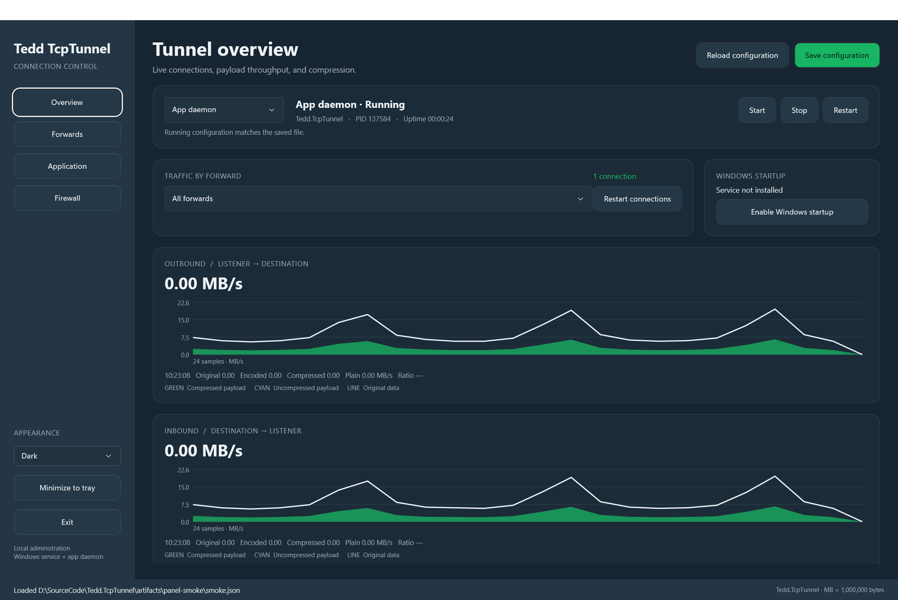

Dual-stack access control
Listen and connect over IPv4 or IPv6. Per-forward ACLs accept exact IP addresses and CIDR subnets, with explicit allow and deny lists.
Tedd.TcpTunnel forwards IPv4 and IPv6 TCP connections through a client and server running at opposite ends of a network link. It can compress and encrypt traffic between them and forwards the original byte stream to your destination service. I initially developed it because Microsoft SQL Server (MSSQL) does not provide wire compression, so the tunnel lets me both compress and encrypt those connections.
Windows & Linux / x64 & ARM64 / LGPL-2.1 licensed
TUNNEL OPTIONS
Listen and connect over IPv4 or IPv6. Per-forward ACLs accept exact IP addresses and CIDR subnets, with explicit allow and deny lists.
Choose Brotli, LZ4, Zstandard, Deflate, GZip, ZLib, or no compression. Brotli can retain history across frames to reuse repeated content.
Encrypt after compression with ChaCha20-Poly1305, AES-256-GCM, or AES-256-CCM. Use a separate 32-byte shared key for each client; remove its entry and restart the server to revoke access.
Terminate application TLS at the client and establish TLS to the destination. Support includes SQL Server TDS 7.x and TDS 8.0 / Encrypt=Strict, TLS 1.2 and 1.3, supplied PFX or PEM certificates, and self-signed certificate generation. AES-GCM and ChaCha20-Poly1305 suites are negotiated by the OS TLS stack.
Install named Windows or systemd services from the executable. Structured lifecycle logs correlate attempts, denials, connections, retries, failures, and closures; debug mode adds protocol context.
WINDOWS CONTROL PANEL · .NET MAUI
Configure every forward, monitor your Windows service, and inspect live traffic in both directions. Use the light or dark theme, or follow Windows.

Edit endpoints, compression, encryption, TLS, ACLs, sockets, logging, and updates. Save validates the file and asks to restart now or apply later. A separate connection reset disconnects current sessions.
Start, stop, and restart named Windows services, or run the daemon inside the app and minimize to the tray. Windows startup uses an automatic service. Service status comes from Windows; telemetry arrives through a protected local pipe.
Two graphs compare original and encoded throughput, including the compressed portion. Preview firewall rules for your listeners and trusted peers before applying them. Domain and Private profiles are selected by default.
COMMAND BUILDER
Choose a role and enter the two endpoints. The generated command runs directly in Bash, PowerShell, or Command Prompt; no configuration file is required.
Run this near the application. It listens locally and connects to the tunnel server.
WINDOWS AND LINUX
Self-contained packages.
No separate .NET installation required.
Checking GitHub for downloadable releases…
Install with an MSI or EXE, or unpack a portable ZIP. Windows packages include the MAUI control panel and CLI, with service management, live telemetry, and firewall assistance.
Unpack the ZIP, make the binary executable, and run. The CLI can install and uninstall named systemd units.
Generate one command for a published release. Windows uses the EXE installer; Linux installs the portable package for the current user.
Waiting for a published GitHub release…The installer adds TcpTunnel to the system PATH. Open a new terminal before running it.
Build artifacts on GitHub Actions require a GitHub account. .NET 11 is currently a release candidate.
All releasesMEASURED ON WINDOWS
Real loopback transfers pass through a TcpTunnel client and server into a validating destination. Median throughput is the primary comparison; peak is retained separately. Methodology and reproduction command
Loading benchmark results…

| Profile | Median | Peak |
|---|
| Profile | Median | Peak |
|---|
| Question | Recorded evidence | Interpretation |
|---|
| Profile | Settings | Input | Median MiB/s | Peak MiB/s |
|---|
Services and logs. Install or remove named Windows and systemd services from the CLI. JSON-line logs record connection attempts, ACL decisions, establishment, retries, failures, and closure; debug logging adds handshake and exception detail. Service commands.
Transport security. Source ACLs accept IPv4/IPv6 addresses and CIDR subnets. Client/Server pairs can authenticate and encrypt the tunnel with one shared key per client. The protocol has no forward secrecy and has not been independently audited. Disable compression when attacker-controlled data and secrets could share a compression context. Listener and destination TLS protect the application connections while the tunnel compresses decrypted data. Certificate validation is enabled by default; an explicit destination trust bypass is available outside Strict mode. PCAP captures contain decrypted application data. TLS and SQL Server setup. Key setup and revocation.
{kind=link}